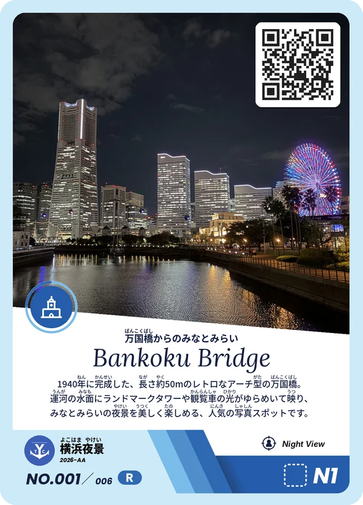
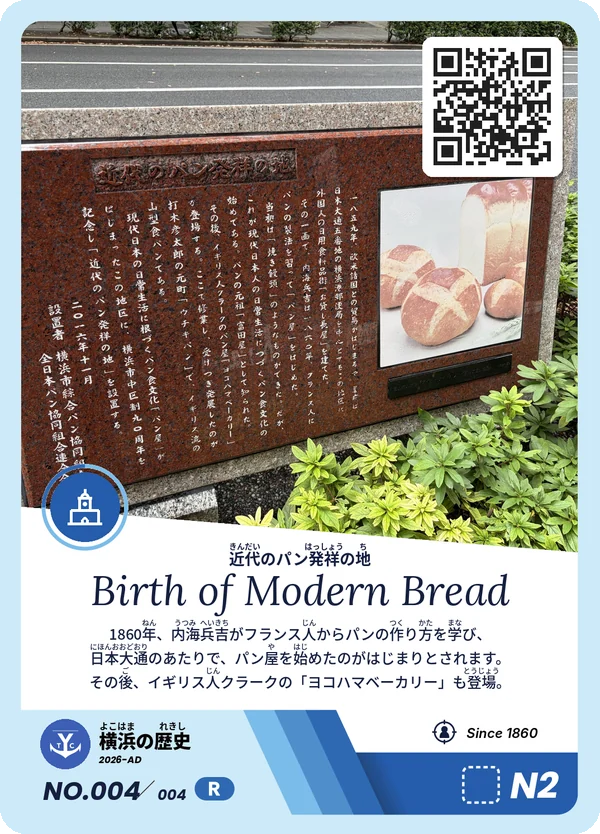
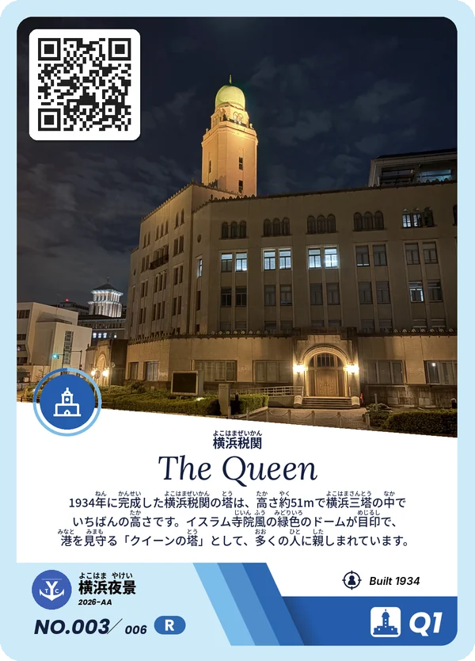

カードを押すと、裏返ります
住みたい街ランキングで、横浜は
9年連続1位。
それなのに、
人口は78年ぶりに
減りはじめた。
出典：SUUMO住みたい街ランキング2026 首都圏版（リクルート）／令和7年国勢調査 速報値（横浜市集計）
横浜は「住みたい街」として、長く選ばれ続けてきました。それでも2025年の国勢調査で、横浜市の人口は78年ぶりに減少しました。
憧れられることと、住み続けたいと思えることは、同じではない。私たちは、そこから始めます。
新しいものをつくらなくても、
魅力はもう、
この街に眠っている。
港の歴史、街並み、夜景、商店、そこで働く人たち。横浜には、まだ知られていない物語がたくさんあります。私たちは、それを1枚ずつカードにして、街の人の手に届けます。
集めるうちに、
自分の街に詳しくなる。
横浜の場所・人・できごとを描くトレーディングカードです。カードを手にした人が、その場所に実際に行ってみたくなる。そんなきっかけをつくります。







横にスクロールしてカードを見る
1枚のカードに、
3つの仕掛け。
-
漢字にはすべてふりがな
小学生でも読めるように。説明文は、その場所の歴史や見どころを3行にぎゅっとまとめています。
-
横浜三塔で、遊べるカードに
キング・クイーン・ジャックの「横浜三塔」をモチーフにしたマークと数字が、右下に入っています。友だちと遊べるルールを準備中です。
横浜三塔ゲームの遊び方を見る -
QRコードから、その場所へ
カードのQRコードを読みこむと、お店や施設の公式ページ、関連する情報サイト、地図などへ。気になった場所に、もっと興味がわく仕掛けです。
子どもたちへ。
「横浜っておもしろい」を、
いちばん最初に。
横浜の小学生は、3年生から「自分のまち」を学びはじめ、区へ、市へと世界を広げていきます。カードを集めることが、その学びをもっと楽しくするきっかけになれたら。
手に入れたカードの場所へ、ぜひ親子で歩いてみてください。
横浜を好きな人であふれる、
10年後、20年後へ。
横浜を心から楽しむ人が増えれば、その熱量に惹かれて「横浜に関わりたい」「住みたい」と思う人が集まってくる。私たちは、そんな活気あふれる横浜をめざします。
シリーズは、続いていきます。
街の魅力は、一度では伝えきれません。年に3〜4つのテーマで、横浜を描き続けていきます。
配布情報は、準備中です。
配布イベントや、カードがもらえる場所は、決まりしだいこのページとXでお知らせします。
一般社団法人
The Yokohama Movement
横浜の再発見と再活性化をテーマに、2026年10月に活動を始めた団体です。非営利の活動として、横浜の街と人を元気にする取り組みを続けています。